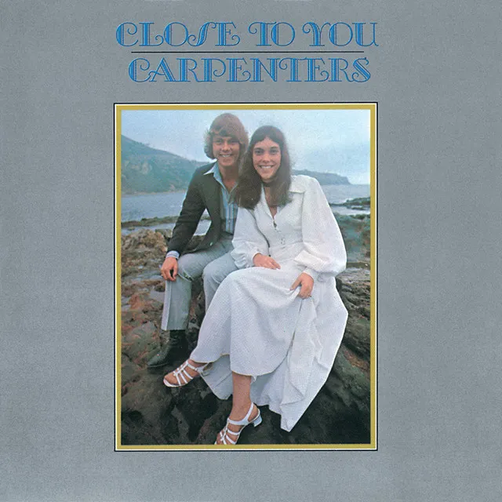

안녕하세요 라보엠입니다.
1970년대를 대표하는 팝 듀오 카펜터스(The Carpenters)는 남매인 리처드 카펜터(Richard Carpenter)와 카렌 카펜터(Karen Carpenter)로 구성된 그룹입니다. 이들의 음악은 카렌의 따뜻하고 부드러운 목소리와 리처드의 뛰어난 편곡 능력이 만나 탄생한 독특한 사운드로 전 세계 음악 팬들의 사랑을 받았습니다. 저도 어릴적 ABBA 와 함께 가장 많이 듣던 목소리중 하나였습니다. 오늘은 카펜터스의 대표적인 노래중 하나인 Close to you를 소개해드리겠습니다.

Close to You - 카펜터스의 대표곡
(They Long to Be) Close to You 1970년 발매된 그들의 2집 앨범 Close to you 의 타이틀 곡입니다. 이 노래는 버트 바카라크(Burt Bacharach)와 할 데이비드(Hal David)가 작곡한 곡으로, 카펜터스의 버전이 가장 유명합니다. 이 노래는 카펜터스에게 첫 빌보드 핫100 1위 곡을 안겨주었고, 그들을 스타덤에 올려놓은 곡입니다. 이 노래의 성공으로 카펜터스는 대중적인 인지도를 얻게 되었고, 이후의 음악 활동에 큰 동력이 되었습니다. 이 곡은 카렌의의 따뜻하고 부드러운 목소리가 돋보이는 노래입니다. 첫 소절부터 귀에 감기는 멜로디와 로맨틱한 가사가 특징이며, 트럼펫 연주와 조화를 이루는 카렌의 보컬이 인상적입니다.
Close to You 가사 해석
Why do birds suddenly appear
Every time you are near?
Just like me, they long to be
Close to you
당신과 가까이 있을 때면
왜 항상 새들이 나타날까요
나처럼, 그들도
당신 곁에 머물고 싶은가봐요
Why do stars fall down from the sky
Every time you walk by?
Just like me, they long to be
Close to you
당신이 걸을 때면
왜 항상 별들이 쏟아질까요
나처럼, 그들도
당신 곁에 머물고 싶은가봐요
On the day that you were born
And the angels got together
And decided to create a dream come true
So they sprinkled moon dust
In your hair of gold
And starlight in your eyes of blue
당신이 태어나던 날
천사들이 모여서
꿈을 이루기로 했지요
달빛의 가루를 당신 금빛 머리에 뿌리고
별빛을 당신의 푸른 눈에 빠뜨린걸요
That is why all the girls in town
Follow you all around
Just like me, they long to be
Close to you
그래서 동네 모든 소녀들이
당신 곁을 맴도는가봐요
나처럼, 그들도
당신 곁에 있고 싶어하니까요
Just like me, they long to be
Close to you
나처럼 그들도
당신 곁에 머물고 싶은가봐요
이 노래의 가사는 사랑하는 사람에 대한 찬사와 동경을 아름답게 표현하고 있습니다. 새들이 나타나고 별들이 하늘에서 떨어지는 것처럼 사랑하는 사람 주위에 일어나는 마법 같은 일들을 노래합니다. 또한 사랑하는 사람이 태어날 때 천사들이 모여 꿈을 만들어냈다는 로맨틱한 상상력이 돋보입니다.
카펜터스의 시작과 비극적 결말
리처드는 어릴 때부터 피아노를 배웠고, 카렌은 고등학교 때 드럼에 재능을 보였습니다. 오빠 리처드의 피아노 연주도 대단했지만, 카렌이 드럼을 치며 노래하는 영상을 보면 너무 놀랍습니다. 1965년 첫 공연을 시작으로 음악 활동을 이어갔고, 1969년 A&M 레코드와 계약을 맺으며 본격적인 활동을 시작했습니다.
카펜터스의 첫 싱글 Ticket to Ride는 빌보드 핫 100 차트 54위에 올랐지만, 이듬해 발표한 (They Long to Be) Close to You가 빌보드 1위를 차지하며 그들의 첫 대형 히트곡이 되었습니다. 이후 "We've Only Just Begun", "Top of the World" 등 수많은 히트곡을 발표하며 1970년대를 주름잡는 팝 듀오로 자리매김했습니다.
카펜터스의 음악은 카렌의 독특한 3옥타브 음역과 리처드의 섬세한 편곡이 어우러진 부드럽고 감미로운 사운드가 특징입니다. 그들의 음악은 이지 리스닝, 어덜트 컨템포러리 장르에서 선두 주자로 인정받았습니다.
그러나 지속적인 투어와 활동으로 인한 스트레스, 카렌의 거식증 등 건강 문제로 인해 1983년 2월 4일, 카렌 카펜터가 32세의 나이로 세상을 떠나면서 카펜터스는 해체되었습니다. 사람들에게 따뜻하고 행복감을 주는 목소리를 가진 카렌이 비극적으로 젊은 나이에 요절한건 너무 안타까운 일입니다.
맺음말
카펜터스는 비록 짧은 활동 기간을 가졌지만, 그들의 음악은 시대를 초월하여 많은 사랑을 받고 있습니다. 전 세계적으로 9천만 장 이상의 음반을 판매한 역대 베스트셀러 아티스트 중 하나로, 그들의 음악은 여전히 라디오에서 자주 들을 수 있고 새로운 세대의 음악 팬들에게도 사랑받고 있습니다. 카렌 카펜터의 목소리는 여전히 많은 가수들에게 영감을 주고 있으며, 2010년 롤링 스톤지가 선정한 '역대 최고의 가수 100인' 목록에 이름을 올리기도 했습니다.
Close to You를 비롯한 카펜터스의 음악은 부드럽고 감미로운 멜로디와 따뜻한 하모니로 오늘날까지도 많은 이들에게 위로와 힐링을 전해주고 있습니다. 그들의 음악은 시간이 지나도 변함없이 우리의 마음을 따뜻하게 만드는 힘을 가지고 있습니다.
카펜터스의 음악을 들으면, 마치 포근한 담요에 감싸인 듯한 편안함을 느낄 수 있습니다. 특히 Close to You는 사랑하는 사람을 생각하며 들으면 더욱 특별한 의미를 가질 수 있는 노래입니다. 여러분도 이번 주말 카펜터스의 Close to You 를 들으며 따뜻한 감성에 젖어보시길 추천 드립니다.